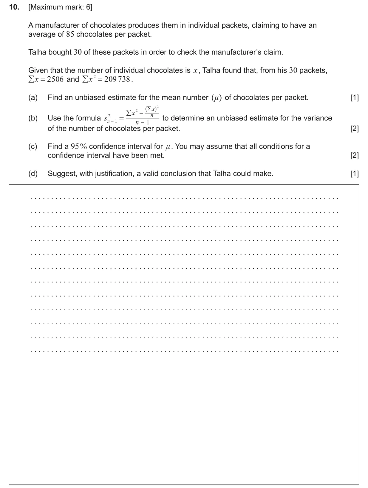
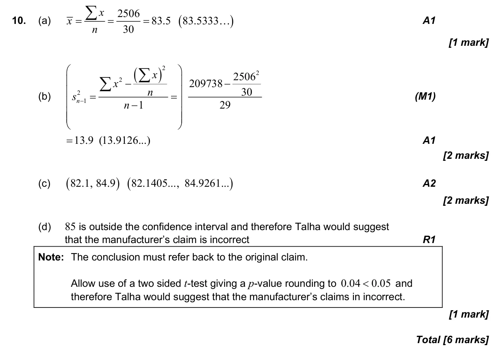

4.14 Linear combinations of random variables and unbiased estimates4.16 Confidence intervals for a mean
Question

Markscheme

6 marks - May P1 TZ2 - Mathematics: Applications and Interpretation HL

